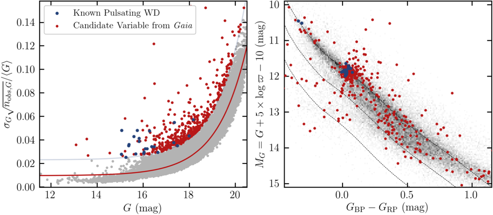
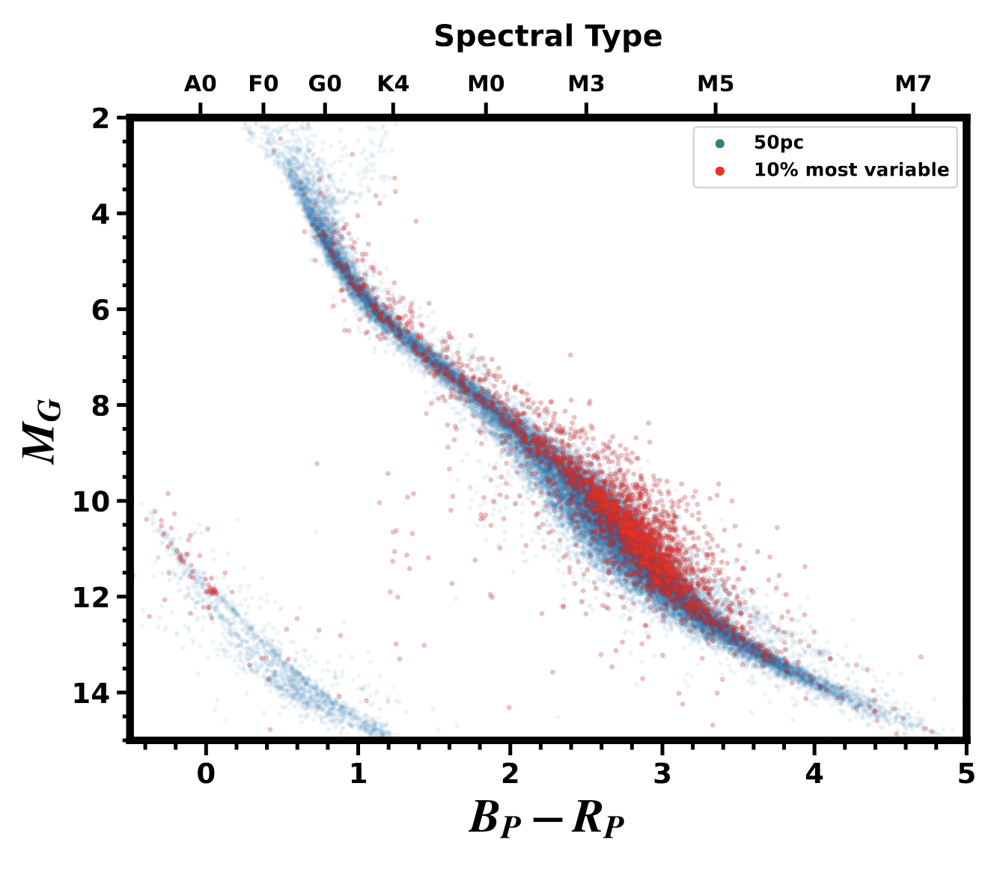
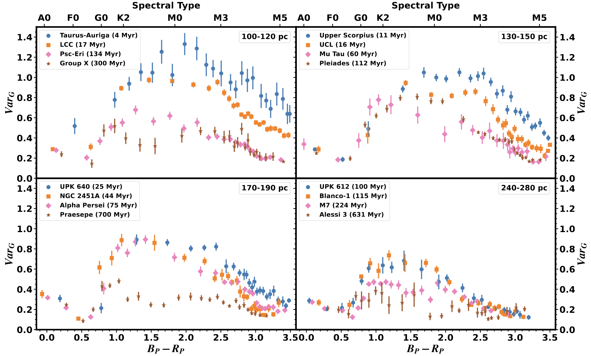
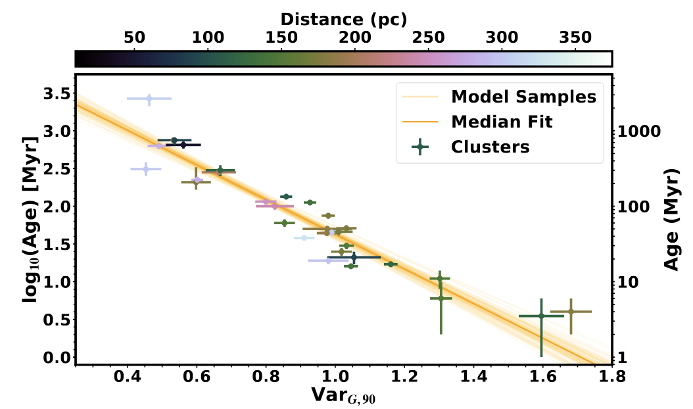
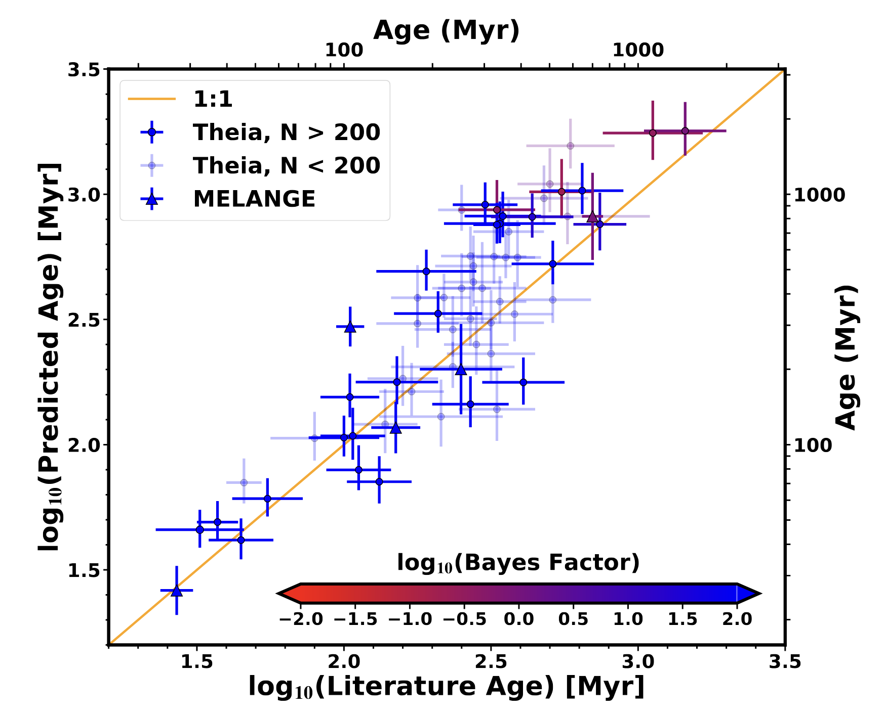
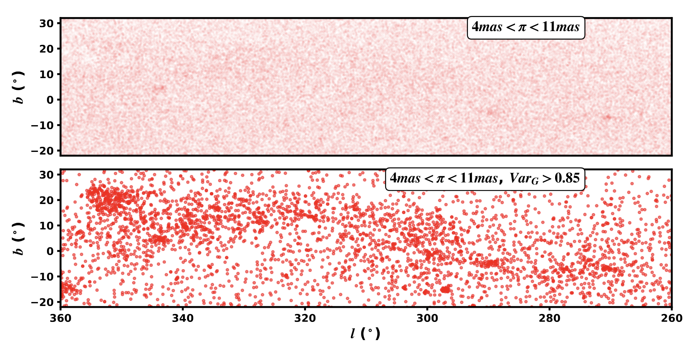

Stellar ages from Gaia-measured Variability -
the EVA code
Barber and Mann 2023
EVA Code
Stars are known to be more active when they are young, resulting in a strong correlation between
age and photometric variability. In principle, we could use photometric variability from any multi-epoch
photometric survey to estimate age. In practice, this is challenging, because activity levels vary
between stars of different types and even between two stars of the same type. The good news is that you
can average over this effect using large groups of stars - the typical variability of a sufficiently large
group of stars should be tightly correlated with age.
We were inspired by a paper on white dwarf variability,
which showed that you could select out the most variable white dwarfs using Gaia photometry. Specifically, you identify the
stars with uncertainties larger than expected from their brightness (excess uncertainty). This works because Gaia photometric uncertainties are calculated
from the scatter in the data, which will be larger than expected from shot noise if the star is variable.

Figure from
Guidry et al (2021).
Each point is a white dwarf from Gaia - most follow the expected sequence of increasing photometric uncertainty with increasing
magnitude (red line). However, the red points are those with photometric uncertainties far larger than expected. Many of these
land in the ZZ Ceti (DAV) instability strip.

We saw this figure and had the idea to try it for young stars. A tell-tale hint that this was going to work
was that many of the most variable stars are high on the main sequence, where we expect to see interacting binaries and
pre-main-sequence stars (see CMD to the left).
The effect is even more clear in the young associations. Here we can see that the youngest stars are 'on top' (higher excess
uncertainty) and older ones on bottom.

The other conclusion we get from this plot is that the method stops working for the bluest and reddest stars. For
hot (blue) stars, this is probably because hot stars have few spots even at young ages. So the correlation between
age and activity is weak. For the coolest stars, it is likely because of a combination of effects. One is that
M dwarfs tend to be covered with spots even at older ages. Increasing the spot coverage past 50% actually
decreases
photometric variability. A bigger effect is that M dwarfs are pretty faint, so the intrinsic photometric uncertainty is a lot higher.
As a result, it takes more photometric noise to generate a significant excess.

We opted to use the 90th percentile of the excess uncertainty (which we will call VarX-90 where X is the photometric band).
A big advantage of this was sensitivity to outliers and nonmembers. You can use this metric on a group even if your membership
list has a lot of field interlopers (a common problem). We also cut out the coolest and hottest stars, since the method is less effective
on those.
Our next step was to calibrate the relation. As you can see on the left plot, the calibration is pretty reasonable - there is a clear
correlation between the variability of a group and the age of said group. There is a distance effect, such that the most distant
clusters appear less variable - likely because they are fainter and hence have higher random noise to overcome.
Now we can apply our Excess Variability-based Age (EVA) method. As a test, we applied it to the Theia groups from
Kounkel and Covey (2019)
(and subsequent papers in that series). There's an offset for the oldest ages.
This might be because the variability metric is less effective when stars are older, or it might be in the Theia ages (the original paper noted similar offsets in their testing).
Outside of this method works quite well, sometimes providing uncertainties below those derived from isochrones. It's also quite remarkable how effective this method is given
how easy it was to apply. We needed only a list of stars and the
EVA code.

The EVA code can be used for all kinds of other things. We used it to show some of the Theia groups are probably not real (not co-eval populations). That is, their
excess uncertainties were more consistent with a random draw of stars than a true young population. You can also use this method to look for new groups. For example, look
at the excess variability in stars around Sco-Cen:

You can spot the regions of Sco-Cen from the excess of variable stars. Of course, we knew how to select members of Sco-Cen before this, but that isn't the point,
we selected them with only a very loose parallax and variability cut. Imagine applying this to far more diffuse groups, or for disentangling multiple groups of different ages.
This adds an extra dimension to any clustering analysis!